Portfolio
This is only an excerpt from my portfolio. If you would like to see additional work or discuss future projects, please contact me and I'd be happy to arrange a consultation.
Web Design
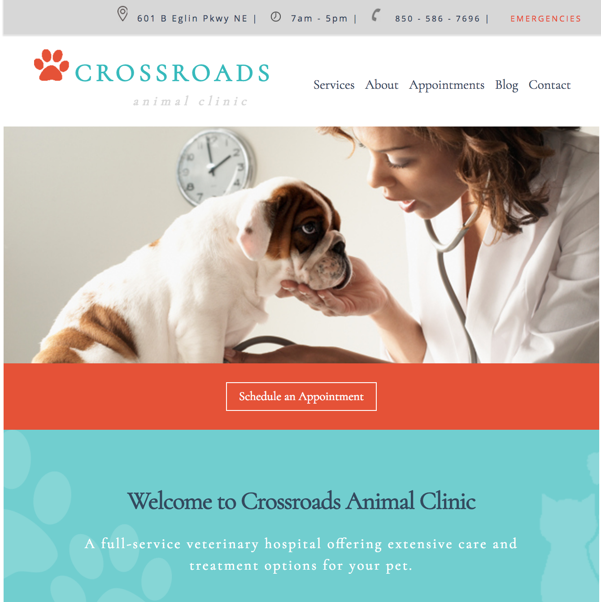
 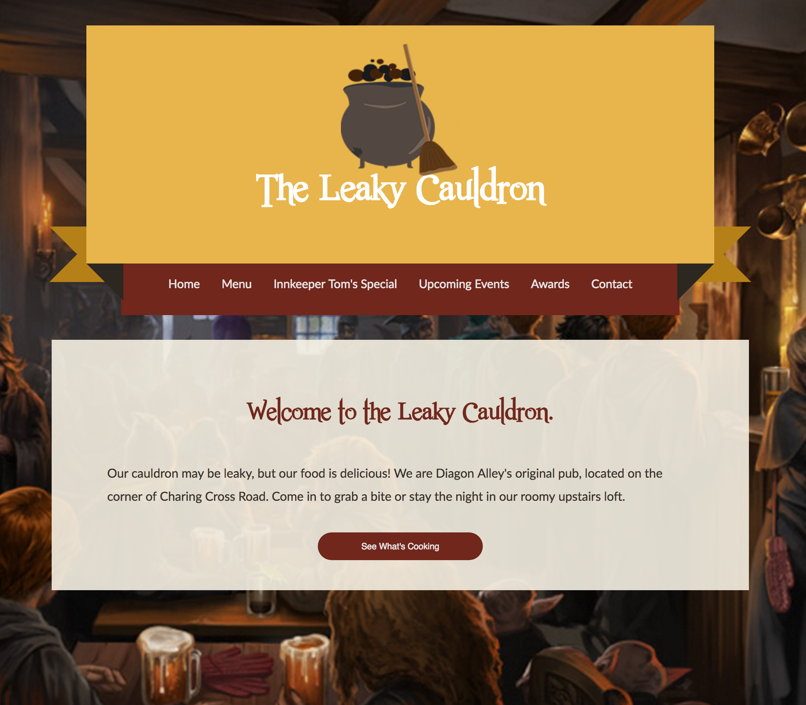
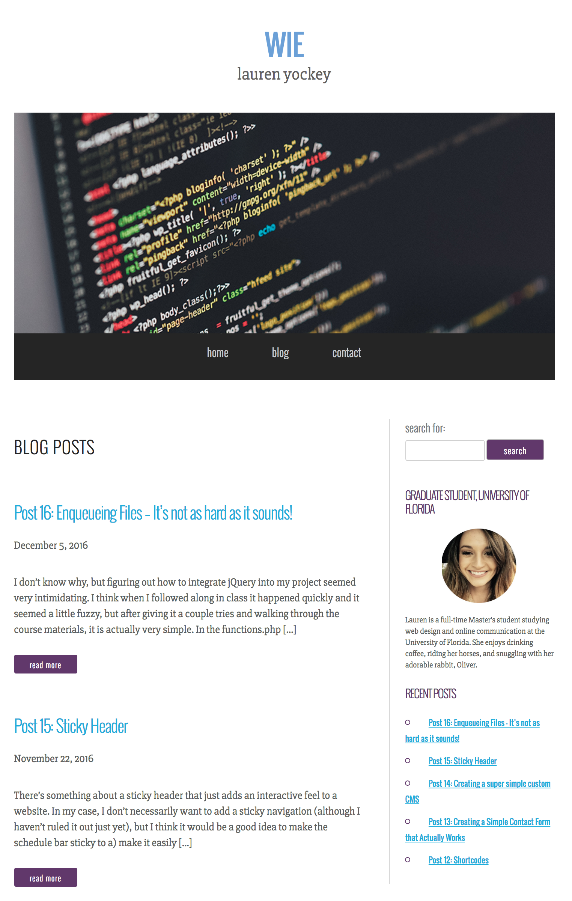
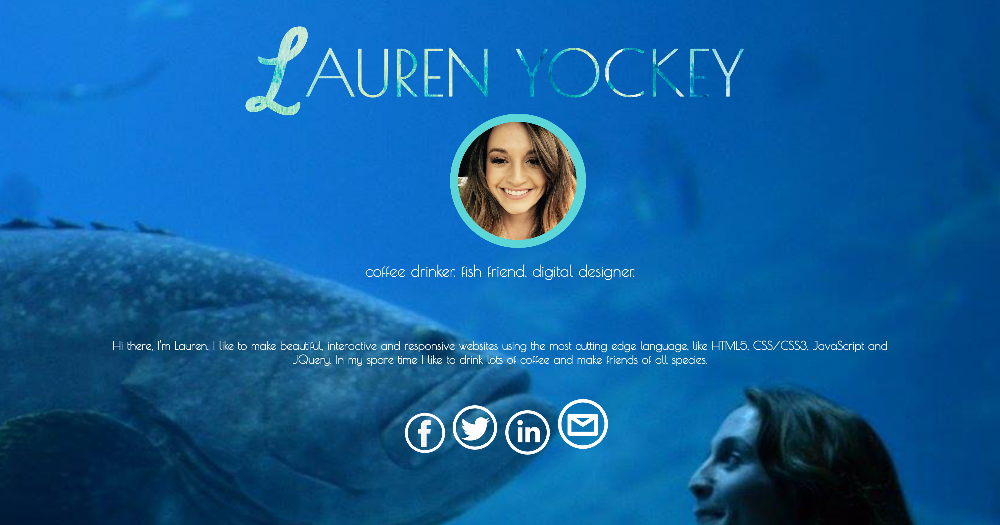
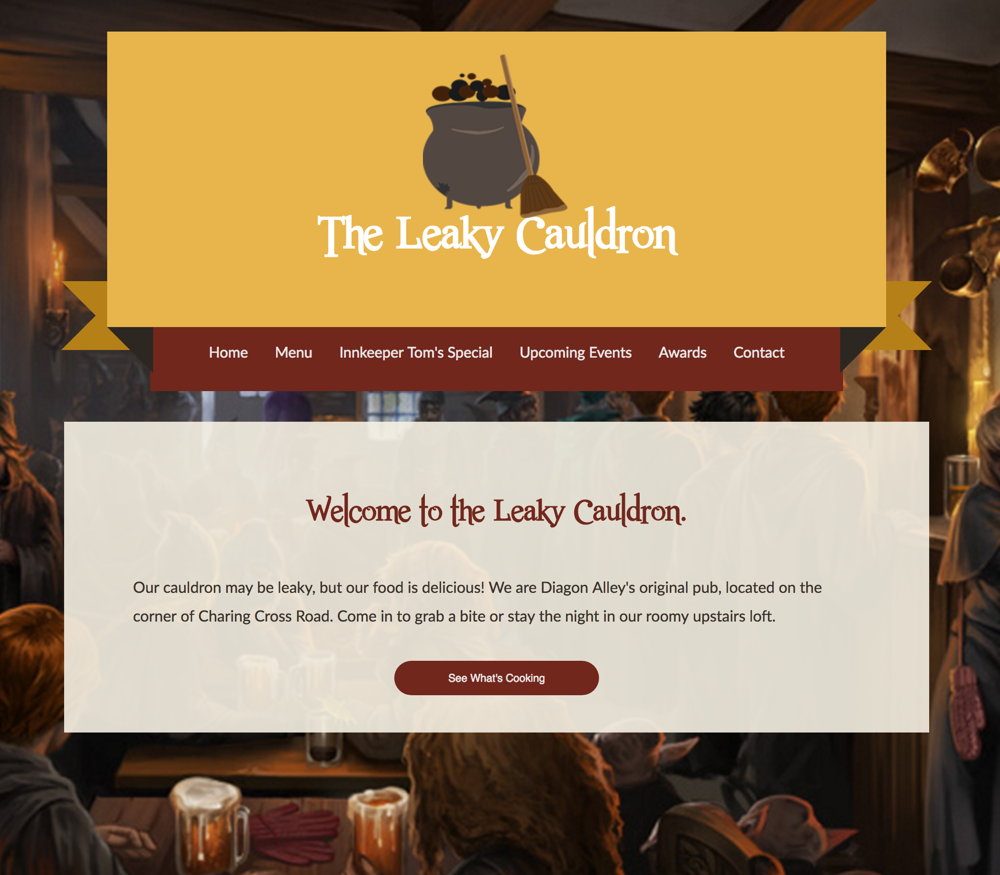
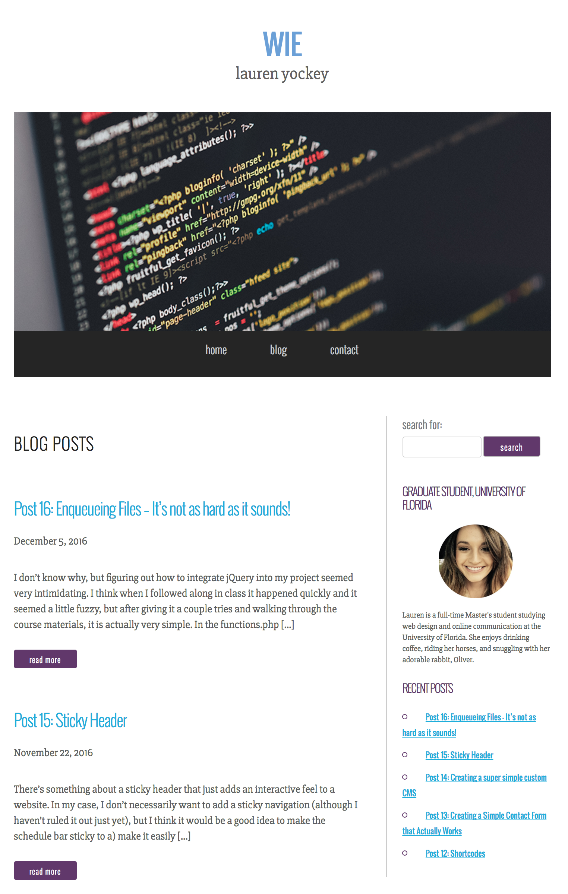
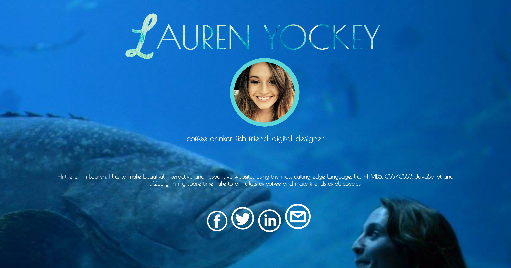
Graphic Design
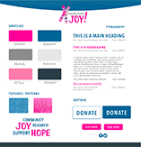 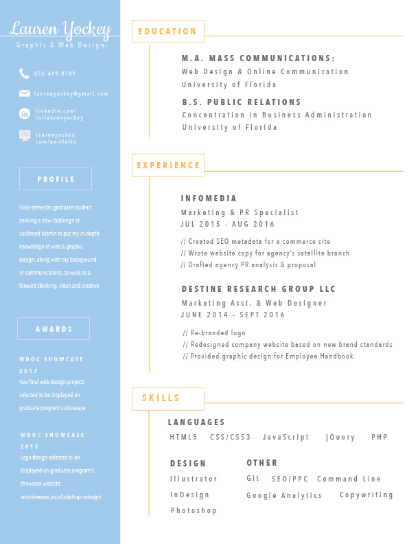 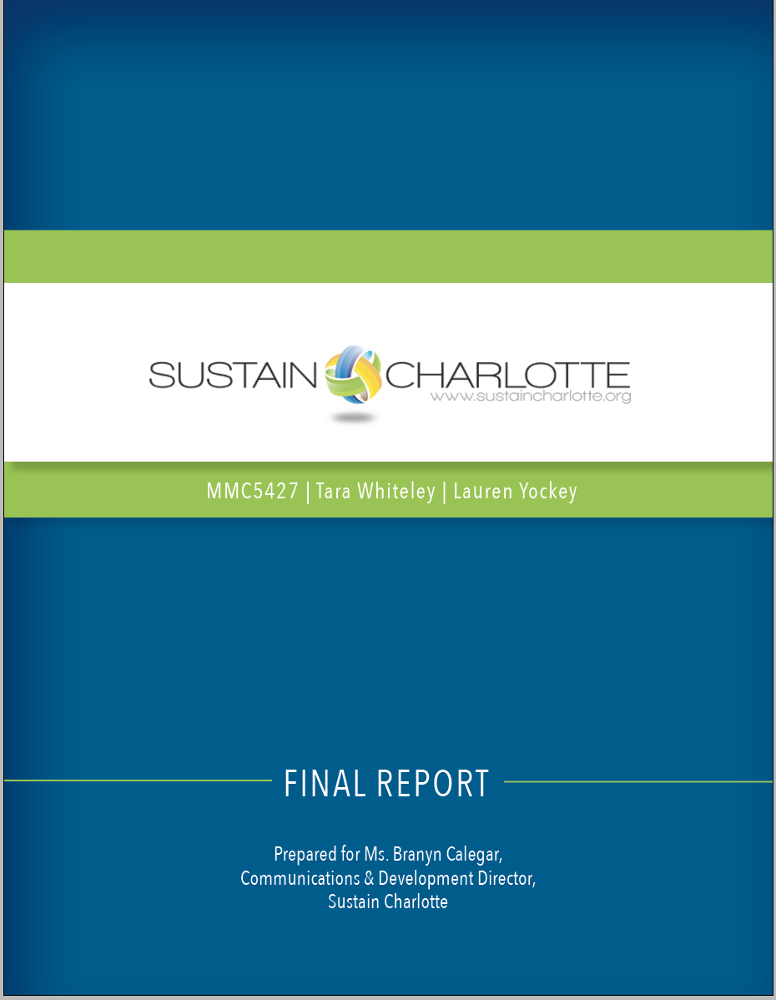 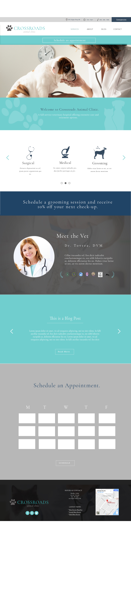 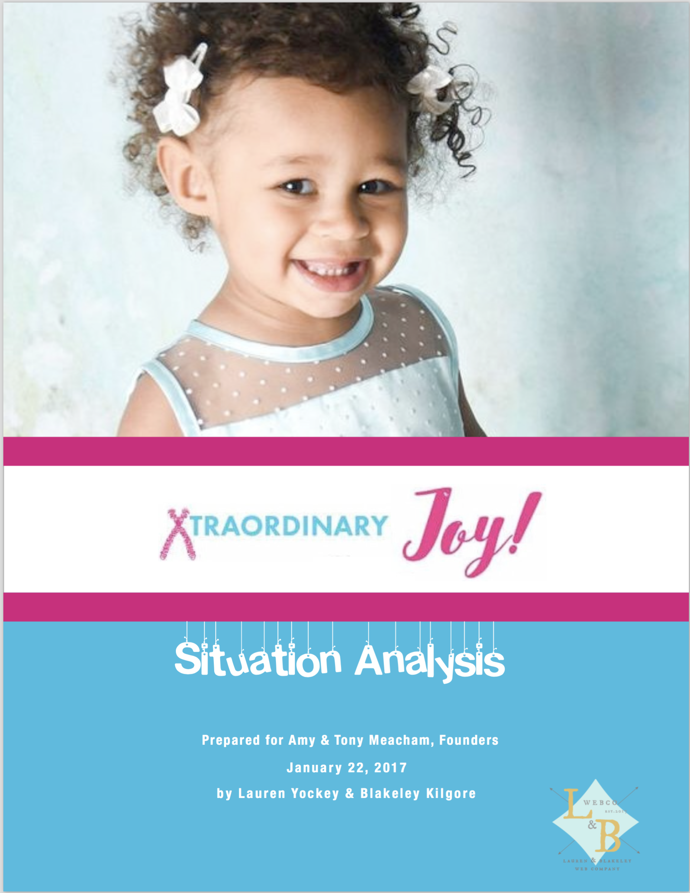 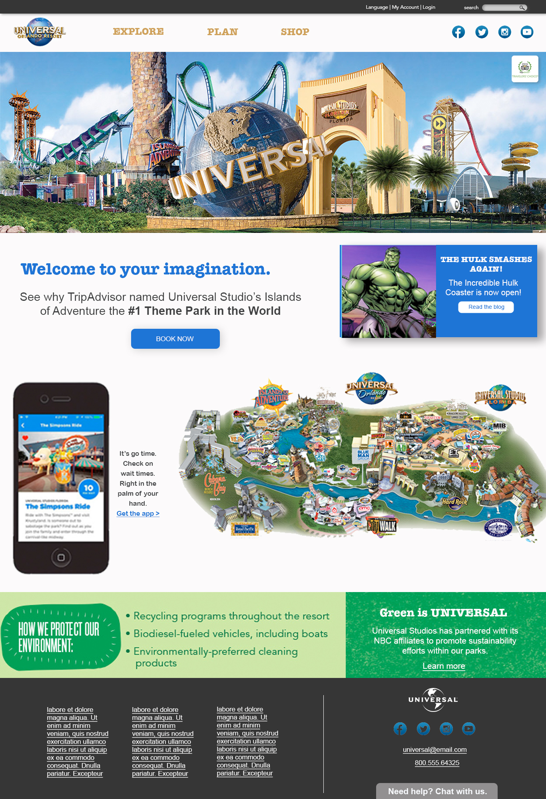